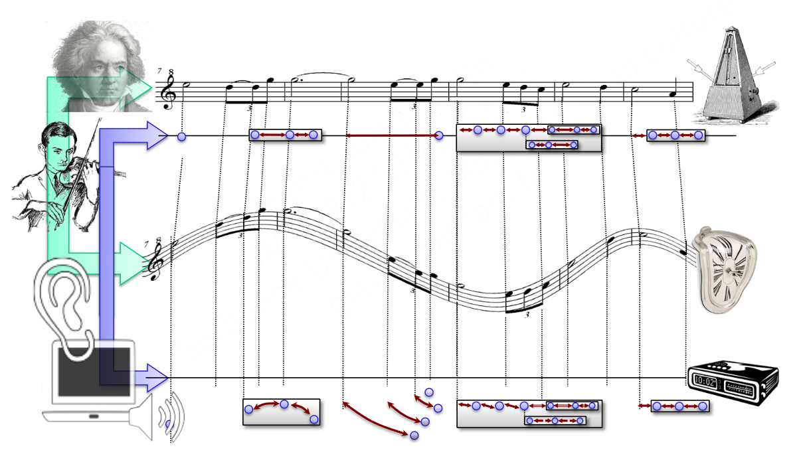
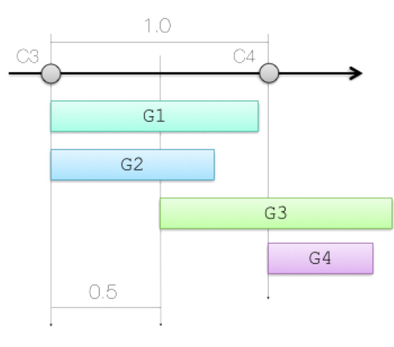
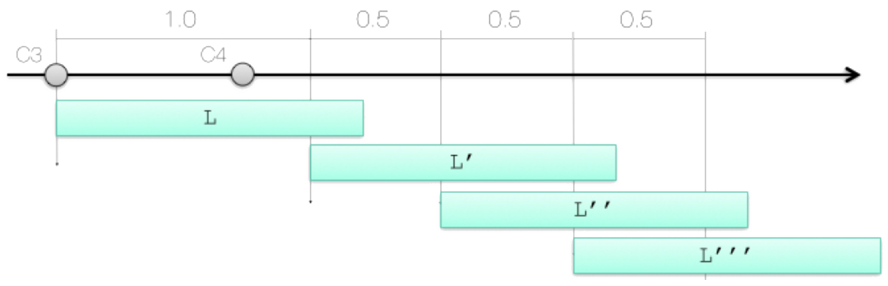
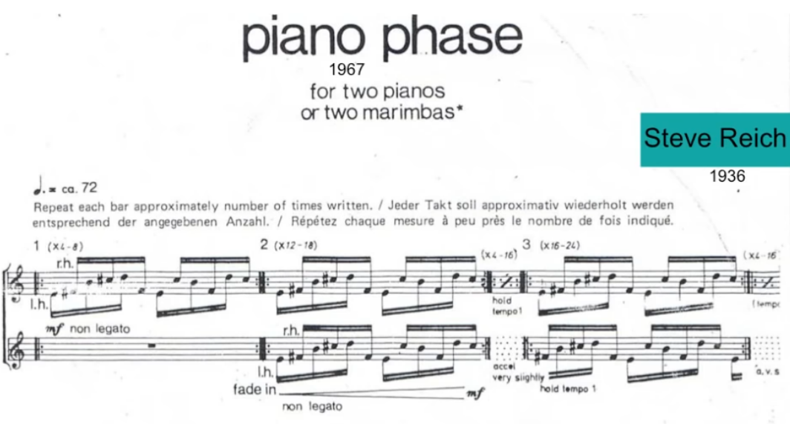
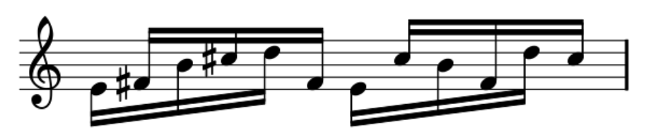
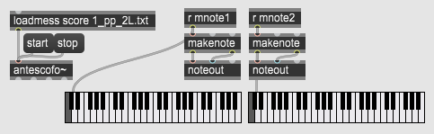
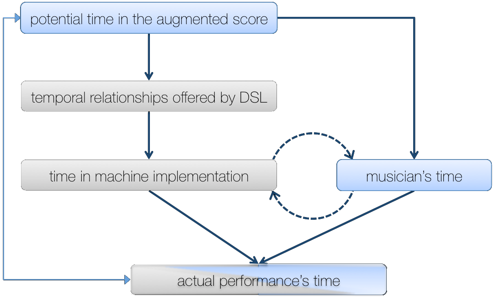
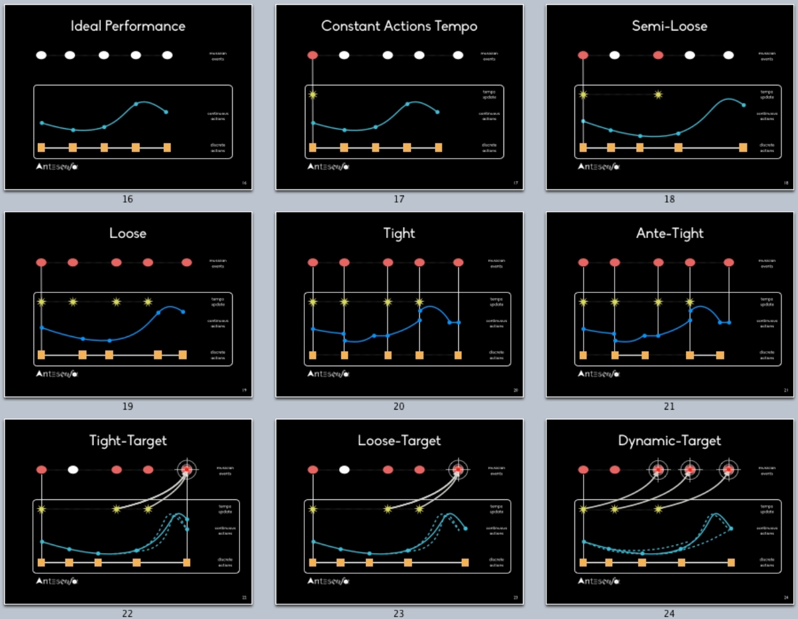

class: center, middle .title[Interactive Music Systems] <br/><br/> .subtitle[More Antescofo] <br/><br/><br/><br/><br/><br/> .date[Nov 2022] <br/><br/><br/> .note[Created with [Liminal](https://github.com/jonathanlilly/liminal) using [Remark.js](http://remarkjs.com/) + [Markdown](https://github.com/adam-p/markdown-here/wiki/Markdown-Cheatsheet) + [KaTeX](https://katex.org)] ??? Author: Grigore Burloiu, UNATC --- name: toc class: left # ★ Table of Contents ★ <!-- omit in toc --> 1. [Compound actions](#compound-actions) 2. [Tracking non-audio events](#tracking-non-audio-events) 3. [Example: *Piano Phase*](#example-piano-phase) 4. [Time in Antescofo](#time-in-antescofo) 5. [Assignment](#assignment) <!-- Comment out the next slide if you don't want the Table of Contents link --> --- layout: true .toc[[★](#toc)] --- <br/><br/> [](https://www.hesge.ch/hem/sites/default/files/contributions/presentation_jean-louis_giavitto_colloque_gesture-capture-notation_2019.pdf) --- name: compound-actions # Compound actions [Action groups](https://support.ircam.fr/docs/Antescofo/manuals/Reference/compound_group/): `GROUP` .left-column[ ```antescofo NOTE C3 1 Group G1 { ... } Group G2 { … } 0.5 Group G3 { … } 0.5 Group G4 { … } NOTE C4 1 ``` ] -- .right-column[  ] --- ## Compound actions [Looped action groups](https://support.ircam.fr/docs/Antescofo/manuals/Reference/compound_loop/): `LOOP` .left-column[ ```antescofo NOTE C3 2/3 $period := 1 Loop L $period { $period := 0.5 … L … } NOTE C4 1 ``` ] --  --- name: tracking-non-audio-events # Tracking non-audio events non-audio events: `EVENT` -- defining external variables: `setvar` [observing the variable](https://support.ircam.fr/docs/Antescofo/manuals/Reference/compound_whenever/): `whenever` --- name: example-piano-phase class: center # Example: *Piano Phase*  <iframe width="95%" height="250" src="https://www.youtube.com/embed/57TuvksMR70" title="Steve Reich - Piano Phase - Visualization" frameborder="0" allow="accelerometer; autoplay; clipboard-write; encrypted-media; gyroscope; picture-in-picture" allowfullscreen></iframe>`*` - `*` missing the "acceleration" segments. See also [other performances](https://www.youtube.com/results?search_query=reich+piano+phase). --- ## The rules of *Piano Phase*  for `n_p = 12...18` periods: - play simultaneously for `n_d = 4...16` periods: - accelerate phase (displace) one of the pianos by one 16th note resync all the above x12 --- ## Implementing *Piano Phase* 1. autonomous 2. tempo-dynamic 3. live accompaniment (warped pre-recording) 4. live accompaniment (warped live recording)  --- name: time-in-antescofo class: left # Time in Antescofo [](https://support.ircam.fr/docs/Antescofo/manuals/Reference/5-synchro/) --- ## Concurrency every action = its own (implicit) thread actions run in parallel, each with its *start time* and *duration* --- ## Synchronisation strategies `@loose` - uses the detected tempo [default] `@tight` - uses event information `@target` - in-between: dynamically use an anticipated event `@tempo` - uses a user-defined tempo value `@sync` - tracks a user-defined (`@tempovar`) tempo variable [Reference: sync strategies](http://support.ircam.fr/docs/Antescofo/manuals/Reference/time_synchro/) [Antescofo model of time](https://hal.archives-ouvertes.fr/hal-01638115/document) paper --- ## Synchronisation strategies  --- ## Sync in *Piano Phase* v3 - `@tempo` v4 - `@target` v4bis - `@target + @sync & @tempovar` --- name: assignment class: left # Assignment Exercises **2** and **4** of Piano Phase OR Create a [Sound Portrait](http://www.soundportraits.info/) - mp3: 10-20 minutes podcast w/ interviews, clips, your own voice? - doc: short bio text - youtube link(s)